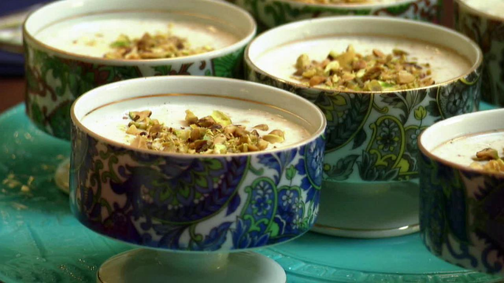

Kheer

Description
Kheer (Indian Rice PUdding), a chilled South Asian dessert made from slow-cooked rice, milk, and sugar,
much like a rice pudding. It is typically flavoured with saffron, cardamom, raisins, and/or various
nuts, notably pistachios, cashews, and almonds.
Ingredients
- 1/2 cup basmati rice
- 6 cup whole milk
- 1 teaspoon ground cardamom
- 1/2 cup sager
- 1 teaspoon rose water
- 3 tablespoon minced unsalted pistachios
Directions :
- n a large, heavy-bottomed pot, bring the rice, milk, and cardamom to a boil over medium-high heat, stirring
constantly with a heat-safe spoonula to help keep the milk from burning.
- Reduce the heat so that the milk is gently simmering and cook for 45 to 50 minutes, stirring often. The rice
should be tender and the milk will have reduced by half, giving a porridge-like consistency.
- Add the sugar, rosewater or vanilla, and pistachios. Stir and turn off the heat. Serve either warm or
chilled, garnished with extra pistachios. Goes well with fresh fruit too.